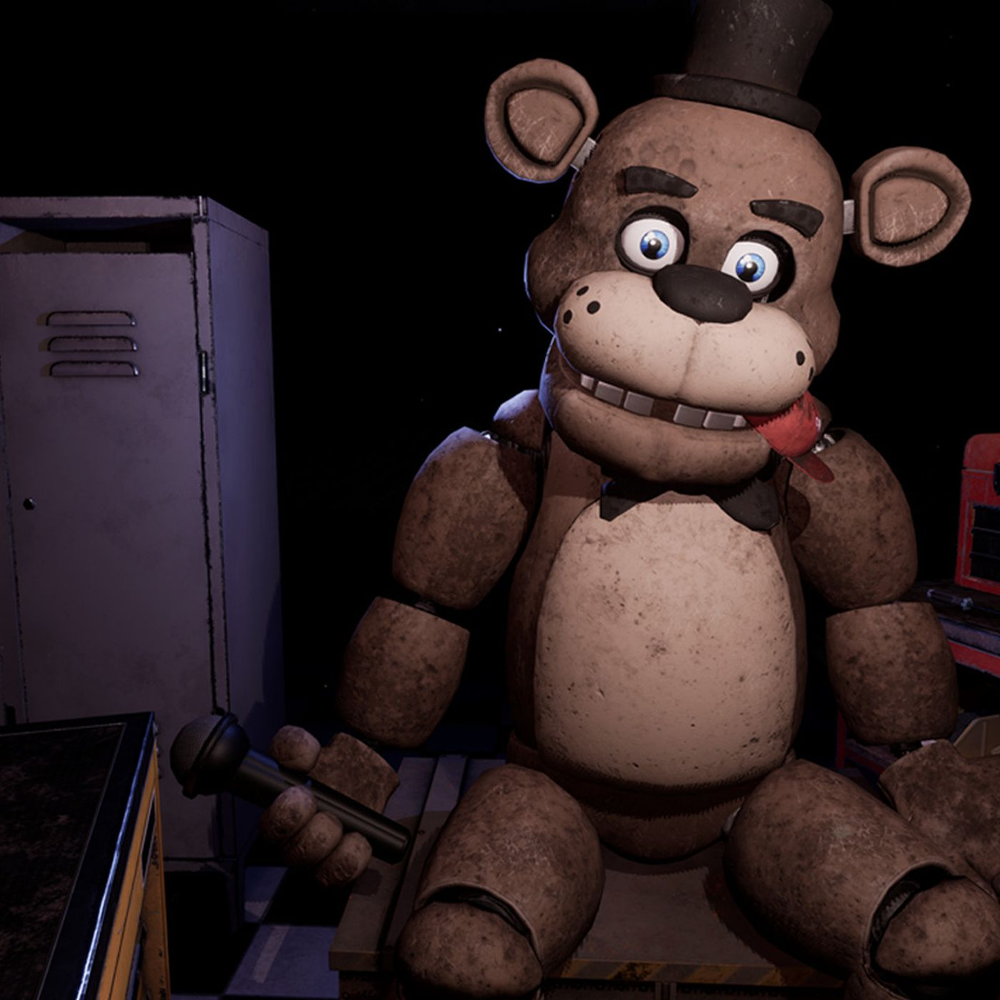

Freddy Fazbear is the main character and the main antagonist, and at the same time the symbol of the Five Nights at Freddy's game series. Freddy is an animatronic bear that is in the "Free Roaming" mode during the night, along with other animatronics. He wears a black bow tie and a top hat of the same color, and holds a microphone in his right paw. His ears are arranged in such a way that he can move them back and forth (this was shown in the game's trailer). Unlike other animatronics, only his eyes are visible on the cameras, which glow (but the whole body can be seen when illuminated). He has palm prints on his face, which can be seen in the game if you look closely. His eyes are blue-blue, but he always looks at the camera with his real, endoskeletal eyes.  Freddy's appearance has changed a lot in the second part of the game. Many parameters have changed - buttons have been added to his chest, gloves on his hands have become more visible. His body segments have also become smaller, and his top hat has become removable. This time, Freddy has an upper row of teeth, his head looks a little smaller, the mustache marks are gone, his eyebrows are thinner, his upper lip has a deeper gap in the center. The eyes were probably also deeper in the mask. Externally, Freddy is better preserved than other old animatronics and Mangles: his skin only shows holes and wires protruding from them in places, but he is just as dirty as other old animatronics. These changes are probably the original appearance of this animatronic.
| Back | Home | Forward |